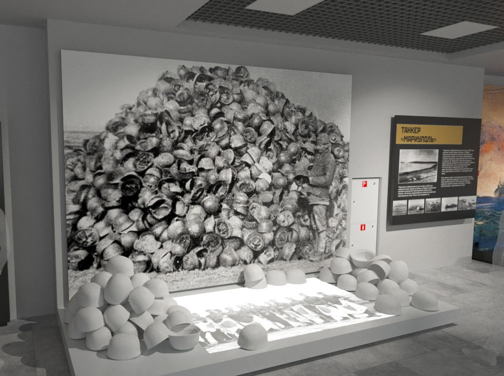
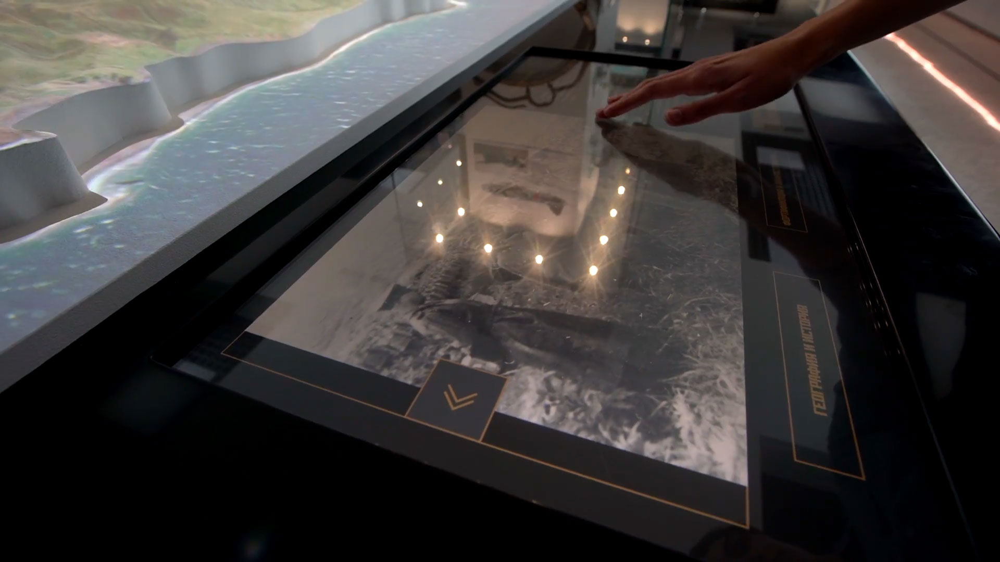

Sakhalin During WWII
Yuzhno-Sakhalinsk Museum Complex
Company: Ascreen
Role: Art Director / Lead Designer
The museum aimed to present a complex and sensitive chapter of history — the story of Sakhalin and the Kuril Islands during WWII — and make archival material emotionally accessible to visitors.
We developed the exhibition concept, visual language, and multimedia design.
Historical documents were restored and digitized, and interactive applications allowed visitors to explore them through touchscreens and projections. All printed graphics, interfaces, and media elements followed a unified visual identity to create a cohesive atmosphere.
In just three months, a cross-disciplinary team of designers and developers built over 100 m² of seamless exhibition space where artifacts, media, and narrative form a continuous visitor journey.